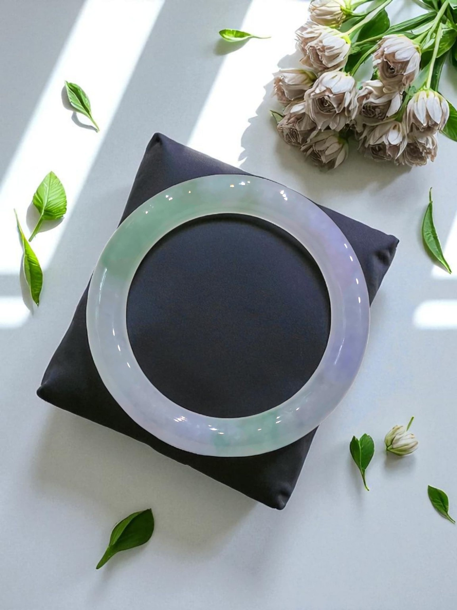
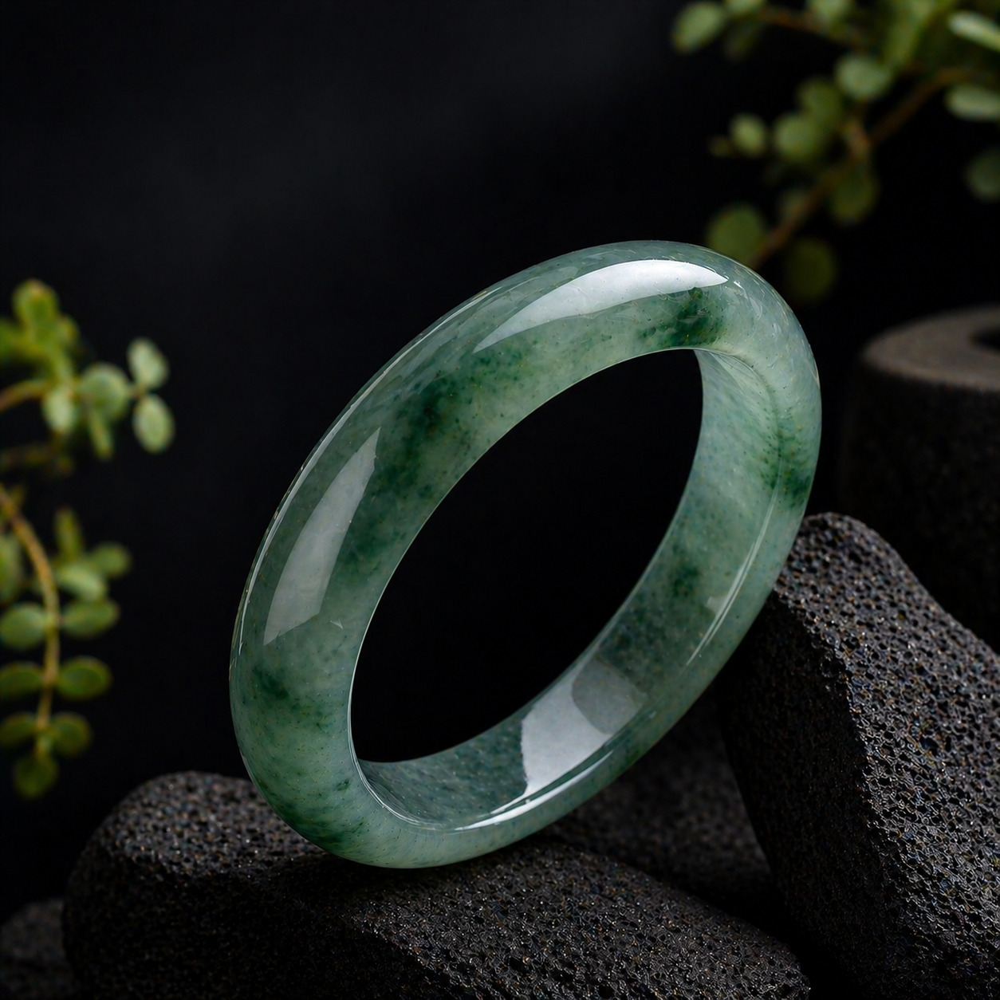
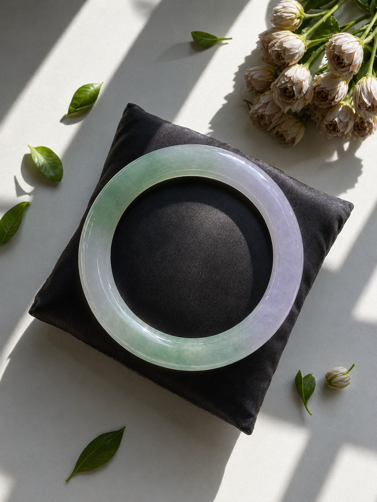

How to choose a jade bangle in Singapore
A jade bangle should be chosen by fit, structure, translucency and overall presence — not colour alone.
At Ixchell Jewellery Singapore, we guide clients through natural Type A Burmese jadeite in a private setting, allowing each piece to be viewed under different light before any decision is made.
Understanding comes first. Choosing follows naturally.
A jade bangle is never chosen in haste.
At Ixchell Jewellery Singapore, each piece is approached with patience and clarity — observed in light, understood in form, and chosen only when it feels right.
Where to view jade bangles in Singapore
Ixchell Jewellery is located at The Adelphi, a short walk from City Hall MRT.
Visitors often find us while exploring nearby landmarks such as National Gallery Singapore and Funan Mall.
A quiet space, set slightly away from the crowd — where time can be taken to view each piece properly.
How should one choose a jade bangle?
Begin with fit. Then observe the structure, translucency, and distribution of colour under different light.
Natural Type A jadeite reveals itself gradually. It may appear different in daylight, in interior light, and in shadow. This is why viewing in person remains essential.

The first instinct is often colour. It should not be the only one.
Colour draws attention, but structure holds meaning. A bangle may appear vivid in a photograph, yet feel entirely different when held.
The more enduring question is not “which is lower in price”, but “which piece continues to feel right, even with time”.
Value is not defined by comparison.
At Ixchell Jewellery, jadeite is not positioned against price. Instead, we guide each client to understand what they are seeing before making a decision.
When viewing a bangle, pause here.
1. Fit
The bangle should pass the hand naturally, resting with ease and security.
2. Structure
Observe the internal grain and natural formation. This is where true distinction begins.
3. Light
Turn the piece gently. Jadeite responds to light — revealing depth, softness and movement within.
How to measure your hand for a jade bangle
To measure your hand for a jade bangle, measure the widest part of your folded hand, then compare it with the bangle’s inner diameter.
Unlike a bracelet, a jade bangle must pass through the hand before resting on the wrist. This is why hand width and hand circumference are more useful than wrist size alone.
Step 1: Fold the hand gently
Bring the thumb towards the palm, as you would when passing your hand through a bangle.
Step 2: Measure the widest part
Use a ruler or measuring tape across the widest part of the folded hand.
Step 3: Match the inner diameter
Use the measurement as a starting guide, then confirm comfort in person whenever possible.
A good fit should pass the hand with care, then rest with ease. The final choice may still depend on knuckle height, bangle thickness and personal comfort.
Jade bangle size chart
This chart offers a gentle reference for estimating jade bangle size. It should be used as a starting point, not a final decision.
For a considered fit, we invite you to view the bangle in person. Width, thickness and comfort can only be properly understood when held and tried.
Carving is not a compromise.
A carved jadeite bangle may be chosen for its artistry, symbolism and craftsmanship. It should not be dismissed without understanding.
The appropriate way to appreciate such a piece is to consider it as a whole — design, workmanship, structure and character.

A considered bangle is never chosen at a glance.
It is held. Turned in light. Understood quietly, before it is chosen.

Images may begin the interest. Viewing completes the understanding.
A jadeite bangle carries weight, balance, surface and luminosity. These qualities cannot be fully conveyed through a screen.
We invite you to experience each piece in person, where its character becomes clear.
What defines natural Type A jadeite?
Type A jadeite refers to jadeite that has not been chemically treated, dyed or resin-filled.
It is valued for its natural structure, translucency and enduring character — qualities that remain stable over time.
This distinction is fundamental when choosing jadeite of lasting value.
Jade Bangle Questions
How do I measure my hand for a jade bangle?
Fold the thumb gently towards the palm, then measure the widest part of the folded hand. This helps estimate the inner diameter needed for a jade bangle.
Should I measure my wrist or my hand for a jade bangle?
For a jade bangle, the hand is more important than the wrist because the bangle must pass through the hand before resting on the wrist.
How do I measure jade bangle size?
Measure the widest part of the folded hand or the circumference around the folded hand, then compare it with a bangle size chart. The final fit is best confirmed in person.
Can jade change colour over time?
Natural jadeite does not transform into a different material. Its appearance may vary with light, surface condition, and wear.
Does a jade bangle become greener when worn?
It does not become greener. However, when clean and well cared for, it may appear more luminous under favourable light.
Is a carved jade bangle inferior?
Not at all. A carved piece should be appreciated for its craftsmanship, proportion and natural quality.
Where may I view jade bangles in Singapore?
Ixchell Jewellery is a private jadeite boutique near City Hall MRT. Viewing is best experienced in a calm, guided setting.
We invite you to experience jadeite in person.
Each bangle reveals its character differently when seen in light, held in hand, and compared with intention.
Private viewing offers the clarity needed to make a decision that feels considered and lasting.
Arrange a Private Viewing